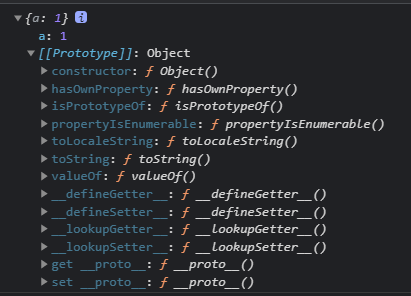
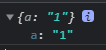
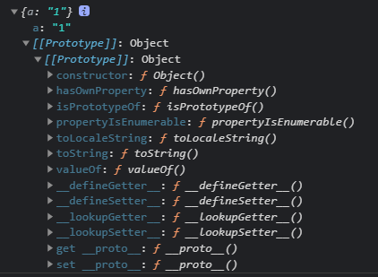
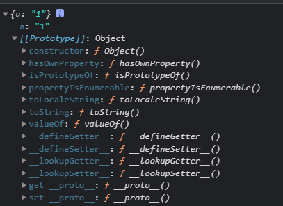
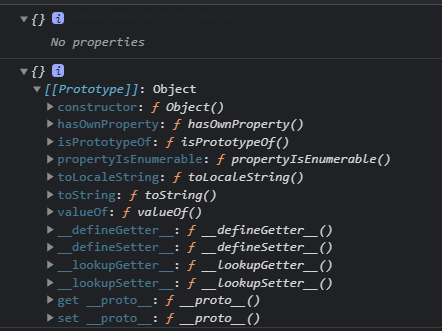

给对象原型赋值。
Object.create(proto, [propertiesObject]);
/*
- proto: 新创建对象的原型对象
- propertiesObject: 可选。要添加到新对象的可枚举（新添加的属性是其自身的属性，而不是其原型链上的属性）的属性。
*/
var o = { a: 1 };
console.log(o);

从上图可以看到，新创建的对象继承了 Object 自身的方法，如 hasOwnProperty、toString 等，在新对象上可以直接使用。
再看看使用 Object.create() 创建对象：
// 创建纯净的对象
var o = Object.create(null, {
a: {
writable: true,
configurable: true,
value: "1",
},
});
console.log(o);

可以看到，新创建的对象除了自身属性之外，原型链上没有任何属性，也没有继承 Object 的任何东西，此时如果我们调用 o.toString() 会报 Uncaught TypeError 的错误。
第一个参数是 null，也就是说将 null 设置成了新创建对象的原型。
改改上面的例子：
var o = Object.create(
{},
{
a: {
writable: true,
configurable: true,
value: "1",
},
}
);
console.log(o);

我们看到，这样创建的对象和使用 {} 创建对象已经很相近了，但是还是有一点区别：多了一层 prototype 嵌套。
最后再修改一下：
var o = Object.create(Object.prototype, {
a: {
writable: true,
configurable: true,
value: "1",
},
});
console.log(o);

这次就和使用 {} 创建的对象一模一样了。
再回到文章开头的问题，为什么很多源码作者会使用 Object.create(null) 来初始化一个新对象呢？这是作者的习惯，还是一个最佳实践？
其实都不是，这并不是作者不经思考随便用的，也不是 javascript 编程中的最佳实践，而是需要因地制宜，具体问题具体分析。
我们进一步比较一下 Object.create(null) 和 {} 创建控对象的区别：
console.log(Object.create(null));
console.log({});

从上图可以看到，使用create创建的对象，没有任何属性，显示 No properties，我们可以把它当作一个非常纯净的 map 来使用，我们可以自己定义 hasOwnProperty、toString方法，不管是有意还是不小心，我们完全不必担心会将原型链上的同名方法覆盖掉。举个例子：
//Demo1:
var a= {...省略很多属性和方法...};
//如果想要检查 a 是否存在一个名为 toString 的属性，你必须像下面这样进行检查：
if(Object.prototype.hasOwnProperty.call(a, 'toString')){
...
}
//为什么不能直接用 a.hasOwnProperty('toString')?因为你可能给 a 添加了一个自定义的 hasOwnProperty
//你无法使用下面这种方式来进行判断,因为原型上的 toString 方法是存在的：
if(a.toString){}
//Demo2:
var a=Object.create(null)
//你可以直接使用下面这种方式判断，因为存在的属性，都将定义在 a 上面，除非手动指定原型：
if(a.toString){}
另一个使用 create(null) 的理由是，在我们使用 for..in 循环的时候会遍历对象原型链上的属性，使用 create(null) 就不必再对属性进行检查了，当然，我们也可以直接使用 Object.keys[]。